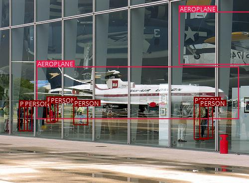
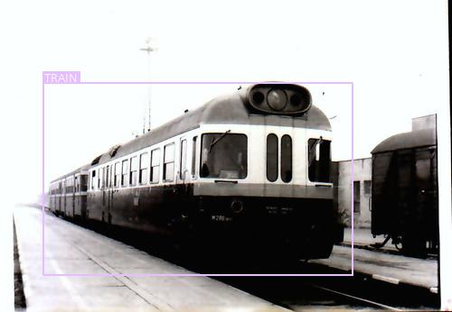

This is a PyTorch Tutorial to Object Detection.
This is the third in a series of tutorials I'm writing about implementing cool models on your own with the amazing PyTorch library.
Basic knowledge of PyTorch, convolutional neural networks is assumed.
If you're new to PyTorch, first read Deep Learning with PyTorch: A 60 Minute Blitz and Learning PyTorch with Examples.
Questions, suggestions, or corrections can be posted as issues.
I'm using PyTorch 0.4 in Python 3.6.
27 Jan 2020: Working code for two new tutorials has been added — Super-Resolution and Machine Translation
Contents
Objective
To build a model that can detect and localize specific objects in images.

We will be implementing the Single Shot Multibox Detector (SSD), a popular, powerful, and especially nimble network for this task. The authors' original implementation can be found here.
Here are some examples of object detection in images not seen during training –

There are more examples at the end of the tutorial.
Concepts
- Object Detection. duh.
- Single-Shot Detection. Earlier architectures for object detection consisted of two distinct stages – a region proposal network that performs object localization and a classifier for detecting the types of objects in the proposed regions. Computationally, these can be very expensive and therefore ill-suited for real-world, real-time applications. Single-shot models encapsulate both localization and detection tasks in a single forward sweep of the network, resulting in significantly faster detections while deployable on lighter hardware.
- Multiscale Feature Maps. In image classification tasks, we base our predictions on the final convolutional feature map – the smallest but deepest representation of the original image. In object detection, feature maps from intermediate convolutional layers can also be directly useful because they represent the original image at different scales. Therefore, a fixed-size filter operating on different feature maps will be able to detect objects of various sizes.
- Priors. These are pre-computed boxes defined at specific positions on specific feature maps, with specific aspect ratios and scales. They are carefully chosen to match the characteristics of objects' bounding boxes (i.e. the ground truths) in the dataset.
- Multibox. This is a technique that formulates predicting an object's bounding box as a regression problem, wherein a detected object's coordinates are regressed to its ground truth's coordinates. In addition, for each predicted box, scores are generated for various object types. Priors serve as feasible starting points for predictions because they are modeled on the ground truths. Therefore, there will be as many predicted boxes as there are priors, most of whom will contain no object.
- Hard Negative Mining. This refers to explicitly choosing the most egregious false positives predicted by a model and forcing it to learn from these examples. In other words, we are mining only those negatives that the model found hardest to identify correctly. In the context of object detection, where the vast majority of predicted boxes do not contain an object, this also serves to reduce the negative-positive imbalance.
- Non-Maximum Suppression. At any given location, multiple priors can overlap significantly. Therefore, predictions arising out of these priors could actually be duplicates of the same object. Non-Maximum Suppression (NMS) is a means to remove redundant predictions by suppressing all but the one with the maximum score.
Overview
In this section, I will present an overview of this model. If you're already familiar with it, you can skip straight to the Implementation section or the commented code.
As we proceed, you will notice that there's a fair bit of engineering that's resulted in the SSD's very specific structure and formulation. Don't worry if some aspects of it seem contrived or unspontaneous at first. Remember, it's built upon years of (often empirical) research in this field.
Some definitions
A box is a box. A bounding box is a box that wraps around an object i.e. represents its bounds.
In this tutorial, we will encounter both types – just boxes and bounding boxes. But all boxes are represented on images and we need to be able to measure their positions, shapes, sizes, and other properties.
Boundary coordinates
The most obvious way to represent a box is by the pixel coordinates of the x and y lines that constitute its boundaries.

The boundary coordinates of a box are simply (x_min, y_min, x_max, y_max).
But pixel values are next to useless if we don't know the actual dimensions of the image. A better way would be to represent all coordinates is in their fractional form.
Now the coordinates are size-invariant and all boxes across all images are measured on the same scale.
Center-Size coordinates
This is a more explicit way of representing a box's position and dimensions.
The center-size coordinates of a box are (c_x, c_y, w, h).
In the code, you will find that we routinely use both coordinate systems depending upon their suitability for the task, and always in their fractional forms.
Jaccard Index
The Jaccard Index or Jaccard Overlap or Intersection-over-Union (IoU) measure the degree or extent to which two boxes overlap.
An IoU of 1 implies they are the same box, while a value of 0 indicates they're mutually exclusive spaces.
It's a simple metric, but also one that finds many applications in our model.
Multibox
Multibox is a technique for detecting objects where a prediction consists of two components –
- Coordinates of a box that may or may not contain an object. This is a regression task.
- Scores for various object types for this box, including a background class which implies there is no object in the box. This is a classification task.
Single Shot Detector (SSD)
The SSD is a purely convolutional neural network (CNN) that we can organize into three parts –
- Base convolutions derived from an existing image classification architecture that will provide lower-level feature maps.
- Auxiliary convolutions added on top of the base network that will provide higher-level feature maps.
- Prediction convolutions that will locate and identify objects in these feature maps.
The paper demonstrates two variants of the model called the SSD300 and the SSD512. The suffixes represent the size of the input image. Although the two networks differ slightly in the way they are constructed, they are in principle the same. The SSD512 is just a larger network and results in marginally better performance.
For convenience, we will deal with the SSD300.
Base Convolutions – part 1
First of all, why use convolutions from an existing network architecture?
Because models proven to work well with image classification are already pretty good at capturing the basic essence of an image. The same convolutional features are useful for object detection, albeit in a more local sense – we're less interested in the image as a whole than specific regions of it where objects are present.
There's also the added advantage of being able to use layers pretrained on a reliable classification dataset. As you may know, this is called Transfer Learning. By borrowing knowledge from a different but closely related task, we've made progress before we've even begun.
The authors of the paper employ the VGG-16 architecture as their base network. It's rather simple in its original form.

They recommend using one that's pretrained on the ImageNet Large Scale Visual Recognition Competition (ILSVRC) classification task. Luckily, there's one already available in PyTorch, as are other popular architectures. If you wish, you could opt for something larger like the ResNet. Just be mindful of the computational requirements.
As per the paper, we've to make some changes to this pretrained network to adapt it to our own challenge of object detection. Some are logical and necessary, while others are mostly a matter of convenience or preference.
- The input image size will be
300, 300, as stated earlier. - The 3rd pooling layer, which halves dimensions, will use the mathematical
ceilingfunction instead of the defaultfloorfunction in determining output size. This is significant only if the dimensions of the preceding feature map are odd and not even. By looking at the image above, you could calculate that for our input image size of300, 300, theconv3_3feature map will be of cross-section75, 75, which is halved to38, 38instead of an inconvenient37, 37. - We modify the 5th pooling layer from a
2, 2kernel and2stride to a3, 3kernel and1stride. The effect this has is it no longer halves the dimensions of the feature map from the preceding convolutional layer. - We don't need the fully connected (i.e. classification) layers because they serve no purpose here. We will toss
fc8away completely, but choose to reworkfc6andfc7into convolutional layersconv6andconv7.
The first three modifications are straightforward enough, but that last one probably needs some explaining.
FC → Convolutional Layer
How do we reparameterize a fully connected layer into a convolutional layer?
Consider the following scenario.
In the typical image classification setting, the first fully connected layer cannot operate on the preceding feature map or image directly. We'd need to flatten it into a 1D structure.
In this example, there's an image of dimensions 2, 2, 3, flattened to a 1D vector of size 12. For an output of size 2, the fully connected layer computes two dot-products of this flattened image with two vectors of the same size 12. These two vectors, shown in gray, are the parameters of the fully connected layer.
Now, consider a different scenario where we use a convolutional layer to produce 2 output values.
Here, the image of dimensions 2, 2, 3 need not be flattened, obviously. The convolutional layer uses two filters with 12 elements in the same shape as the image to perform two dot products. These two filters, shown in gray, are the parameters of the convolutional layer.
But here's the key part – in both scenarios, the outputs Y_0 and Y_1 are the same!
The two scenarios are equivalent.
What does this tell us?
That on an image of size H, W with I input channels, a fully connected layer of output size N is equivalent to a convolutional layer with kernel size equal to the image size H, W and N output channels, provided that the parameters of the fully connected network N, H * W * I are the same as the parameters of the convolutional layer N, H, W, I.
Therefore, any fully connected layer can be converted to an equivalent convolutional layer simply by reshaping its parameters.
Base Convolutions – part 2
We now know how to convert fc6 and fc7 in the original VGG-16 architecture into conv6 and conv7 respectively.
In the ImageNet VGG-16 shown previously, which operates on images of size 224, 224, 3, you can see that the output of conv5_3 will be of size 7, 7, 512. Therefore –
fc6with a flattened input size of7 * 7 * 512and an output size of4096has parameters of dimensions4096, 7 * 7 * 512. The equivalent convolutional layerconv6has a7, 7kernel size and4096output channels, with reshaped parameters of dimensions4096, 7, 7, 512.fc7with an input size of4096(i.e. the output size offc6) and an output size4096has parameters of dimensions4096, 4096. The input could be considered as a1, 1image with4096input channels. The equivalent convolutional layerconv7has a1, 1kernel size and4096output channels, with reshaped parameters of dimensions4096, 1, 1, 4096.
We can see that conv6 has 4096 filters, each with dimensions 7, 7, 512, and conv7 has 4096 filters, each with dimensions 1, 1, 4096.
These filters are numerous and large – and computationally expensive.
To remedy this, the authors opt to reduce both their number and the size of each filter by subsampling parameters from the converted convolutional layers.
conv6will use1024filters, each with dimensions3, 3, 512. Therefore, the parameters are subsampled from4096, 7, 7, 512to1024, 3, 3, 512.conv7will use1024filters, each with dimensions1, 1, 1024. Therefore, the parameters are subsampled from4096, 1, 1, 4096to1024, 1, 1, 1024.
Based on the references in the paper, we will subsample by picking every mth parameter along a particular dimension, in a process known as decimation.
Since the kernel of conv6 is decimated from 7, 7 to 3, 3 by keeping only every 3rd value, there are now holes in the kernel. Therefore, we would need to make the kernel dilated or atrous.
This corresponds to a dilation of 3 (same as the decimation factor m = 3). However, the authors actually use a dilation of 6, possibly because the 5th pooling layer no longer halves the dimensions of the preceding feature map.
We are now in a position to present our base network, the modified VGG-16.
In the above figure, pay special attention to the outputs of conv4_3 and conv_7. You will see why soon enough.
Auxiliary Convolutions
We will now stack some more convolutional layers on top of our base network. These convolutions provide additional feature maps, each progressively smaller than the last.
We introduce four convolutional blocks, each with two layers. While size reduction happened through pooling in the base network, here it is facilitated by a stride of 2 in every second layer.
Again, take note of the feature maps from conv8_2, conv9_2, conv10_2, and conv11_2.
A detour
Before we move on to the prediction convolutions, we must first understand what it is we are predicting. Sure, it's objects and their positions, but in what form?
It is here that we must learn about priors and the crucial role they play in the SSD.
Priors
Object predictions can be quite diverse, and I don't just mean their type. They can occur at any position, with any size and shape. Mind you, we shouldn't go as far as to say there are infinite possibilities for where and how an object can occur. While this may be true mathematically, many options are simply improbable or uninteresting. Furthermore, we needn't insist that boxes are pixel-perfect.
In effect, we can discretize the mathematical space of potential predictions into just thousands of possibilities.
Priors are precalculated, fixed boxes which collectively represent this universe of probable and approximate box predictions.
Priors are manually but carefully chosen based on the shapes and sizes of ground truth objects in our dataset. By placing these priors at every possible location in a feature map, we also account for variety in position.
In defining the priors, the authors specify that –
- they will be applied to various low-level and high-level feature maps, viz. those from
conv4_3,conv7,conv8_2,conv9_2,conv10_2, andconv11_2. These are the same feature maps indicated on the figures before. - if a prior has a scale
s, then its area is equal to that of a square with sides. The largest feature map,conv4_3, will have priors with a scale of0.1, i.e.10%of image's dimensions, while the rest have priors with scales linearly increasing from0.2to0.9. As you can see, larger feature maps have priors with smaller scales and are therefore ideal for detecting smaller objects. - At each position on a feature map, there will be priors of various aspect ratios. All feature maps will have priors with ratios
1:1, 2:1, 1:2. The intermediate feature maps ofconv7,conv8_2, andconv9_2will also have priors with ratios3:1, 1:3. Moreover, all feature maps will have one extra prior with an aspect ratio of1:1and at a scale that is the geometric mean of the scales of the current and subsequent feature map.
| Feature Map From | Feature Map Dimensions | Prior Scale | Aspect Ratios | Number of Priors per Position | Total Number of Priors on this Feature Map |
|---|---|---|---|---|---|
conv4_3 | 38, 38 | 0.1 | 1:1, 2:1, 1:2 + an extra prior | 4 | 5776 |
conv7 | 19, 19 | 0.2 | 1:1, 2:1, 1:2, 3:1, 1:3 + an extra prior | 6 | 2166 |
conv8_2 | 10, 10 | 0.375 | 1:1, 2:1, 1:2, 3:1, 1:3 + an extra prior | 6 | 600 |
conv9_2 | 5, 5 | 0.55 | 1:1, 2:1, 1:2, 3:1, 1:3 + an extra prior | 6 | 150 |
conv10_2 | 3, 3 | 0.725 | 1:1, 2:1, 1:2 + an extra prior | 4 | 36 |
conv11_2 | 1, 1 | 0.9 | 1:1, 2:1, 1:2 + an extra prior | 4 | 4 |
| Grand Total | – | – | – | – | 8732 priors |
There are a total of 8732 priors defined for the SSD300!
Visualizing Priors
We defined the priors in terms of their scales and aspect ratios.

Solving these equations yields a prior's dimensions w and h.
We're now in a position to draw them on their respective feature maps.
For example, let's try to visualize what the priors will look like at the central tile of the feature map from conv9_2.
The same priors also exist for each of the other tiles.
Predictions vis-à-vis Priors
Earlier, we said we would use regression to find the coordinates of an object's bounding box. But then, surely, the priors can't represent our final predicted boxes?
They don't.
Again, I would like to reiterate that the priors represent, approximately, the possibilities for prediction.
This means that we use each prior as an approximate starting point and then find out how much it needs to be adjusted to obtain a more exact prediction for a bounding box.
So if each predicted bounding box is a slight deviation from a prior, and our goal is to calculate this deviation, we need a way to measure or quantify it.
Consider a cat, its predicted bounding box, and the prior with which the prediction was made.
Assume they are represented in center-size coordinates, which we are familiar with.
Then –
This answers the question we posed at the beginning of this section. Considering that each prior is adjusted to obtain a more precise prediction, these four offsets (g_c_x, g_c_y, g_w, g_h) are the form in which we will regress bounding boxes' coordinates.
As you can see, each offset is normalized by the corresponding dimension of the prior. This makes sense because a certain offset would be less significant for a larger prior than it would be for a smaller prior.
Prediction convolutions
Earlier, we earmarked and defined priors for six feature maps of various scales and granularity, viz. those from conv4_3, conv7, conv8_2, conv9_2, conv10_2, and conv11_2.
Then, for each prior at each location on each feature map, we want to predict –
- the offsets
(g_c_x, g_c_y, g_w, g_h)for a bounding box. - a set of
n_classesscores for the bounding box, wheren_classesrepresents the total number of object types (including a background class).
To do this in the simplest manner possible, we need two convolutional layers for each feature map –
a localization prediction convolutional layer with a
3, 3kernel evaluating at each location (i.e. with padding and stride of1) with4filters for each prior present at the location.The
4filters for a prior calculate the four encoded offsets(g_c_x, g_c_y, g_w, g_h)for the bounding box predicted from that prior.a class prediction convolutional layer with a
3, 3kernel evaluating at each location (i.e. with padding and stride of1) withn_classesfilters for each prior present at the location.The
n_classesfilters for a prior calculate a set ofn_classesscores for that prior.
All our filters are applied with a kernel size of 3, 3.
We don't really need kernels (or filters) in the same shapes as the priors because the different filters will learn to make predictions with respect to the different prior shapes.
Let's take a look at the outputs of these convolutions. Consider again the feature map from conv9_2.
The outputs of the localization and class prediction layers are shown in blue and yellow respectively. You can see that the cross-section (5, 5) remains unchanged.
What we're really interested in is the third dimension, i.e. the channels. These contain the actual predictions.
If you choose a tile, any tile, in the localization predictions and expand it, what will you see?
Voilà! The channel values at each position of the localization predictions represent the encoded offsets with respect to the priors at that position.
Now, do the same with the class predictions. Assume n_classes = 3.
Similar to before, these channels represent the class scores for the priors at that position.
Now that we understand what the predictions for the feature map from conv9_2 look like, we can reshape them into a more amenable form.
We have arranged the 150 predictions serially. To the human mind, this should appear more intuitive.
But let's not stop here. We could do the same for the predictions for all layers and stack them together.
We calculated earlier that there are a total of 8732 priors defined for our model. Therefore, there will be 8732 predicted boxes in encoded-offset form, and 8732 sets of class scores.
This is the final output of the prediction stage. A stack of boxes, if you will, and estimates for what's in them.
It's all coming together, isn't it? If this is your first rodeo in object detection, I should think there's now a faint light at the end of the tunnel.
Multibox loss
Based on the nature of our predictions, it's easy to see why we might need a unique loss function. Many of us have calculated losses in regression or classification settings before, but rarely, if ever, together.
Obviously, our total loss must be an aggregate of losses from both types of predictions – bounding box localizations and class scores.
Then, there are a few questions to be answered –
What loss function will be used for the regressed bounding boxes?
Will we use multiclass cross-entropy for the class scores?
In what ratio will we combine them?
How do we match predicted boxes to their ground truths?
We have 8732 predictions! Won't most of these contain no object? Do we even consider them?
Phew. Let's get to work.
Matching predictions to ground truths
Remember, the nub of any supervised learning algorithm is that we need to be able to match predictions to their ground truths. This is tricky since object detection is more open-ended than the average learning task.
For the model to learn anything, we'd need to structure the problem in a way that allows for comparisions between our predictions and the objects actually present in the image.
Priors enable us to do exactly this!
- Find the Jaccard overlaps between the 8732 priors and
Nground truth objects. This will be a tensor of size8732, N. - Match each of the 8732 priors to the object with which it has the greatest overlap.
- If a prior is matched with an object with a Jaccard overlap of less than
0.5, then it cannot be said to "contain" the object, and is therefore a negative match. Considering we have thousands of priors, most priors will test negative for an object. - On the other hand, a handful of priors will actually overlap significantly (greater than
0.5) with an object, and can be said to "contain" that object. These are positive matches. - Now that we have matched each of the 8732 priors to a ground truth, we have, in effect, also matched the corresponding 8732 predictions to a ground truth.
Let's reproduce this logic with an example.
For convenience, we will assume there are just seven priors, shown in red. The ground truths are in yellow – there are three actual objects in this image.
Following the steps outlined earlier will yield the following matches –
Now, each prior has a match, positive or negative. By extension, each prediction has a match, positive or negative.
Predictions that are positively matched with an object now have ground truth coordinates that will serve as targets for localization, i.e. in the regression task. Naturally, there will be no target coordinates for negative matches.
All predictions have a ground truth label, which is either the type of object if it is a positive match or a background class if it is a negative match. These are used as targets for class prediction, i.e. the classification task.
Localization loss
We have no ground truth coordinates for the negative matches. This makes perfect sense. Why train the model to draw boxes around empty space?
Therefore, the localization loss is computed only on how accurately we regress positively matched predicted boxes to the corresponding ground truth coordinates.
Since we predicted localization boxes in the form of offsets (g_c_x, g_c_y, g_w, g_h), we would also need to encode the ground truth coordinates accordingly before we calculate the loss.
The localization loss is the averaged Smooth L1 loss between the encoded offsets of positively matched localization boxes and their ground truths.
Confidence loss
Every prediction, no matter positive or negative, has a ground truth label associated with it. It is important that the model recognizes both objects and a lack of them.
However, considering that there are usually only a handful of objects in an image, the vast majority of the thousands of predictions we made do not actually contain an object. As Walter White would say, tread lightly. If the negative matches overwhelm the positive ones, we will end up with a model that is less likely to detect objects because, more often than not, it is taught to detect the background class.
The solution may be obvious – limit the number of negative matches that will be evaluated in the loss function. But how do we choose?
Well, why not use the ones that the model was most wrong about? In other words, only use those predictions where the model found it hardest to recognize that there are no objects. This is called Hard Negative Mining.
The number of hard negatives we will use, say N_hn, is usually a fixed multiple of the number of positive matches for this image. In this particular case, the authors have decided to use three times as many hard negatives, i.e. N_hn = 3 * N_p. The hardest negatives are discovered by finding the Cross Entropy loss for each negatively matched prediction and choosing those with top N_hn losses.
Then, the confidence loss is simply the sum of the Cross Entropy losses among the positive and hard negative matches.
You will notice that it is averaged by the number of positive matches.
Total loss
The Multibox loss is the aggregate of the two losses, combined in a ratio α.
In general, we needn't decide on a value for α. It could be a learnable parameter.
For the SSD, however, the authors simply use α = 1, i.e. add the two losses. We'll take it!
Processing predictions
After the model is trained, we can apply it to images. However, the predictions are still in their raw form – two tensors containing the offsets and class scores for 8732 priors. These would need to be processed to obtain final, human-interpretable bounding boxes with labels.
This entails the following –
We have 8732 predicted boxes represented as offsets
(g_c_x, g_c_y, g_w, g_h)from their respective priors. Decode them to boundary coordinates, which are actually directly interpretable.Then, for each non-background class,
- Extract the scores for this class for each of the 8732 boxes.
- Eliminate boxes that do not meet a certain threshold for this score.
- The remaining (uneliminated) boxes are candidates for this particular class of object.
At this point, if you were to draw these candidate boxes on the original image, you'd see many highly overlapping boxes that are obviously redundant. This is because it's extremely likely that, from the thousands of priors at our disposal, more than one prediction corresponds to the same object.
For instance, consider the image below.
There's clearly only three objects in it – two dogs and a cat. But according to the model, there are three dogs and two cats.
Mind you, this is just a mild example. It could really be much, much worse.
Now, to you, it may be obvious which boxes are referring to the same object. This is because your mind can process that certain boxes coincide significantly with each other and a specific object.
In practice, how would this be done?
First, line up the candidates for each class in terms of how likely they are.
We've sorted them by their scores.
The next step is to find which candidates are redundant. We already have a tool at our disposal to judge how much two boxes have in common with each other – the Jaccard overlap.
So, if we were to draw up the Jaccard similarities between all the candidates in a given class, we could evaluate each pair and if found to overlap significantly, keep only the more likely candidate.
Thus, we've eliminated the rogue candidates – one of each animal.
This process is called Non-Maximum Suppression (NMS) because when multiple candidates are found to overlap significantly with each other such that they could be referencing the same object, we suppress all but the one with the maximum score.
Algorithmically, it is carried out as follows –
Upon selecting candidates for each non-background class,
- Arrange candidates for this class in order of decreasing likelihood.
- Consider the candidate with the highest score. Eliminate all candidates with lesser scores that have a Jaccard overlap of more than, say,
0.5with this candidate. - Consider the next highest-scoring candidate still remaining in the pool. Eliminate all candidates with lesser scores that have a Jaccard overlap of more than
0.5with this candidate. - Repeat until you run through the entire sequence of candidates.
The end result is that you will have just a single box – the very best one – for each object in the image.
Non-Maximum Suppression is quite crucial for obtaining quality detections.
Happily, it's also the final step.
Implementation
The sections below briefly describe the implementation.
They are meant to provide some context, but details are best understood directly from the code, which is quite heavily commented.
Dataset
We will use Pascal Visual Object Classes (VOC) data from the years 2007 and 2012.
Description
This data contains images with twenty different types of objects.
xxxxxxxxxx{'aeroplane', 'bicycle', 'bird', 'boat', 'bottle', 'bus', 'car', 'cat', 'chair', 'cow', 'diningtable', 'dog', 'horse', 'motorbike', 'person', 'pottedplant', 'sheep', 'sofa', 'train', 'tvmonitor'}Each image can contain one or more ground truth objects.
Each object is represented by –
- a bounding box in absolute boundary coordinates
- a label (one of the object types mentioned above)
- a perceived detection difficulty (either
0, meaning not difficult, or1, meaning difficult)
Download
Specfically, you will need to download the following VOC datasets –
- 2007 trainval (460MB)
- 2012 trainval (2GB)
- 2007 test (451MB)
Consistent with the paper, the two trainval datasets are to be used for training, while the VOC 2007 test will serve as our test data.
Make sure you extract both the VOC 2007 trainval and 2007 test data to the same location, i.e. merge them.
Inputs to model
We will need three inputs.
Images
Since we're using the SSD300 variant, the images would need to be sized at 300, 300 pixels and in the RGB format.
Remember, we're using a VGG-16 base pretrained on ImageNet that is already available in PyTorch's torchvision module. This page details the preprocessing or transformation we would need to perform in order to use this model – pixel values must be in the range [0,1] and we must then normalize the image by the mean and standard deviation of the ImageNet images' RGB channels.
xxxxxxxxxxmean = [0.485, 0.456, 0.406]std = [0.229, 0.224, 0.225]Also, PyTorch follows the NCHW convention, which means the channels dimension (C) must precede the size dimensions.
Therefore, images fed to the model must be a Float tensor of dimensions N, 3, 300, 300, and must be normalized by the aforesaid mean and standard deviation. N is the batch size.
Objects' Bounding Boxes
We would need to supply, for each image, the bounding boxes of the ground truth objects present in it in fractional boundary coordinates (x_min, y_min, x_max, y_max).
Since the number of objects in any given image can vary, we can't use a fixed size tensor for storing the bounding boxes for the entire batch of N images.
Therefore, ground truth bounding boxes fed to the model must be a list of length N, where each element of the list is a Float tensor of dimensions N_o, 4, where N_o is the number of objects present in that particular image.
Objects' Labels
We would need to supply, for each image, the labels of the ground truth objects present in it.
Each label would need to be encoded as an integer from 1 to 20 representing the twenty different object types. In addition, we will add a background class with index 0, which indicates the absence of an object in a bounding box. (But naturally, this label will not actually be used for any of the ground truth objects in the dataset.)
Again, since the number of objects in any given image can vary, we can't use a fixed size tensor for storing the labels for the entire batch of N images.
Therefore, ground truth labels fed to the model must be a list of length N, where each element of the list is a Long tensor of dimensions N_o, where N_o is the number of objects present in that particular image.
Data pipeline
As you know, our data is divided into training and test splits.
Parse raw data
See create_data_lists() in utils.py.
This parses the data downloaded and saves the following files –
- A JSON file for each split with a list of the absolute filepaths of
Iimages, whereIis the total number of images in the split. - A JSON file for each split with a list of
Idictionaries containing ground truth objects, i.e. bounding boxes in absolute boundary coordinates, their encoded labels, and perceived detection difficulties. Theith dictionary in this list will contain the objects present in theith image in the previous JSON file. - A JSON file which contains the
label_map, the label-to-index dictionary with which the labels are encoded in the previous JSON file. This dictionary is also available inutils.pyand directly importable.
PyTorch Dataset
See PascalVOCDataset in datasets.py.
This is a subclass of PyTorch Dataset, used to define our training and test datasets. It needs a __len__ method defined, which returns the size of the dataset, and a __getitem__ method which returns the ith image, bounding boxes of the objects in this image, and labels for the objects in this image, using the JSON files we saved earlier.
You will notice that it also returns the perceived detection difficulties of each of these objects, but these are not actually used in training the model. They are required only in the Evaluation stage for computing the Mean Average Precision (mAP) metric. We also have the option of filtering out difficult objects entirely from our data to speed up training at the cost of some accuracy.
Additionally, inside this class, each image and the objects in them are subject to a slew of transformations as described in the paper and outlined below.
Data Transforms
See transform() in utils.py.
This function applies the following transformations to the images and the objects in them –
- Randomly adjust brightness, contrast, saturation, and hue, each with a 50% chance and in random order.
- With a 50% chance, perform a zoom out operation on the image. This helps with learning to detect small objects. The zoomed out image must be between
1and4times as large as the original. The surrounding space could be filled with the mean of the ImageNet data. - Randomly crop image, i.e. perform a zoom in operation. This helps with learning to detect large or partial objects. Some objects may even be cut out entirely. Crop dimensions are to be between
0.3and1times the original dimensions. The aspect ratio is to be between0.5and2. Each crop is made such that there is at least one bounding box remaining that has a Jaccard overlap of either0,0.1,0.3,0.5,0.7, or0.9, randomly chosen, with the cropped image. In addition, any bounding boxes remaining whose centers are no longer in the image as a result of the crop are discarded. There is also a chance that the image is not cropped at all. - With a 50% chance, horizontally flip the image.
- Resize the image to
300, 300pixels. This is a requirement of the SSD300. - Convert all boxes from absolute to fractional boundary coordinates. At all stages in our model, all boundary and center-size coordinates will be in their fractional forms.
- Normalize the image with the mean and standard deviation of the ImageNet data that was used to pretrain our VGG base.
As mentioned in the paper, these transformations play a crucial role in obtaining the stated results.
PyTorch DataLoader
The Dataset described above, PascalVOCDataset, will be used by a PyTorch DataLoader in train.py to create and feed batches of data to the model for training or evaluation.
Since the number of objects vary across different images, their bounding boxes, labels, and difficulties cannot simply be stacked together in the batch. There would be no way of knowing which objects belong to which image.
Instead, we need to pass a collating function to the collate_fn argument, which instructs the DataLoader about how it should combine these varying size tensors. The simplest option would be to use Python lists.
Base Convolutions
See VGGBase in model.py.
Here, we create and apply base convolutions.
The layers are initialized with parameters from a pretrained VGG-16 with the load_pretrained_layers() method.
We're especially interested in the lower-level feature maps that result from conv4_3 and conv7, which we return for use in subsequent stages.
Auxiliary Convolutions
See AuxiliaryConvolutions in model.py.
Here, we create and apply auxiliary convolutions.
Use a uniform Xavier initialization for the parameters of these layers.
We're especially interested in the higher-level feature maps that result from conv8_2, conv9_2, conv10_2 and conv11_2, which we return for use in subsequent stages.
Prediction Convolutions
See PredictionConvolutions in model.py.
Here, we create and apply localization and class prediction convolutions to the feature maps from conv4_3, conv7, conv8_2, conv9_2, conv10_2 and conv11_2.
These layers are initialized in a manner similar to the auxiliary convolutions.
We also reshape the resulting prediction maps and stack them as discussed. Note that reshaping in PyTorch is only possible if the original tensor is stored in a contiguous chunk of memory.
As expected, the stacked localization and class predictions will be of dimensions 8732, 4 and 8732, 21 respectively.
Putting it all together
See SSD300 in model.py.
Here, the base, auxiliary, and prediction convolutions are combined to form the SSD.
There is a small detail here – the lowest level features, i.e. those from conv4_3, are expected to be on a significantly different numerical scale compared to its higher-level counterparts. Therefore, the authors recommend L2-normalizing and then rescaling each of its channels by a learnable value.
Priors
See create_prior_boxes() under SSD300 in model.py.
This function creates the priors in center-size coordinates as defined for the feature maps from conv4_3, conv7, conv8_2, conv9_2, conv10_2 and conv11_2, in that order. Furthermore, for each feature map, we create the priors at each tile by traversing it row-wise.
This ordering of the 8732 priors thus obtained is very important because it needs to match the order of the stacked predictions.
Multibox Loss
See MultiBoxLoss in model.py.
Two empty tensors are created to store localization and class prediction targets, i.e. ground truths, for the 8732 predicted boxes in each image.
We find the ground truth object with the maximum Jaccard overlap for each prior, which is stored in object_for_each_prior.
We want to avoid the rare situation where not all of the ground truth objects have been matched. Therefore, we also find the prior with the maximum overlap for each ground truth object, stored in prior_for_each_object. We explicitly add these matches to object_for_each_prior and artificially set their overlaps to a value above the threshold so they are not eliminated.
Based on the matches in object_for_each prior, we set the corresponding labels, i.e. targets for class prediction, to each of the 8732 priors. For those priors that don't overlap significantly with their matched objects, the label is set to background.
Also, we encode the coordinates of the 8732 matched objects in object_for_each prior in offset form (g_c_x, g_c_y, g_w, g_h) with respect to these priors, to form the targets for localization. Not all of these 8732 localization targets are meaningful. As we discussed earlier, only the predictions arising from the non-background priors will be regressed to their targets.
The localization loss is the Smooth L1 loss over the positive matches.
Perform Hard Negative Mining – rank class predictions matched to background, i.e. negative matches, by their individual Cross Entropy losses. The confidence loss is the Cross Entropy loss over the positive matches and the hardest negative matches. Nevertheless, it is averaged only by the number of positive matches.
The Multibox Loss is the aggregate of these two losses, combined in the ratio α. In our case, they are simply being added because α = 1.
Training
Before you begin, make sure to save the required data files for training and evaluation. To do this, run the contents of create_data_lists.py after pointing it to the VOC2007 and VOC2012 folders in your downloaded data.
See train.py.
The parameters for the model (and training it) are at the beginning of the file, so you can easily check or modify them should you need to.
To train your model from scratch, run this file –
python train.py
To resume training at a checkpoint, point to the corresponding file with the checkpoint parameter at the beginning of the code.
Remarks
In the paper, they recommend using Stochastic Gradient Descent in batches of 32 images, with an initial learning rate of 1e−3, momentum of 0.9, and 5e-4 weight decay.
I ended up using a batch size of 8 images for increased stability. If you find that your gradients are exploding, you could reduce the batch size, like I did, or clip gradients.
The authors also doubled the learning rate for bias parameters. As you can see in the code, this is easy do in PyTorch, by passing separate groups of parameters to the params argument of its SGD optimizer.
The paper recommends training for 80000 iterations at the initial learning rate. Then, it is decayed by 90% (i.e. to a tenth) for an additional 20000 iterations, twice. With the paper's batch size of 32, this means that the learning rate is decayed by 90% once after the 154th epoch and once more after the 193th epoch, and training is stopped after 232 epochs. I followed this schedule.
On a TitanX (Pascal), each epoch of training required about 6 minutes.
Model checkpoint
You can download this pretrained model here.
Note that this checkpoint should be loaded directly with PyTorch for evaluation or inference – see below.
Evaluation
See eval.py.
The data-loading and checkpoint parameters for evaluating the model are at the beginning of the file, so you can easily check or modify them should you wish to.
To begin evaluation, simply run the evaluate() function with the data-loader and model checkpoint. Raw predictions for each image in the test set are obtained and parsed with the checkpoint's detect_objects() method, which implements this process. Evaluation has to be done at a min_score of 0.01, an NMS max_overlap of 0.45, and top_k of 200 to allow fair comparision of results with the paper and other implementations.
Parsed predictions are evaluated against the ground truth objects. The evaluation metric is the Mean Average Precision (mAP). If you're not familiar with this metric, here's a great explanation.
We will use calculate_mAP() in utils.py for this purpose. As is the norm, we will ignore difficult detections in the mAP calculation. But nevertheless, it is important to include them from the evaluation dataset because if the model does detect an object that is considered to be difficult, it must not be counted as a false positive.
The model scores 77.2 mAP, same as the result reported in the paper.
Class-wise average precisions (not scaled to 100) are listed below.
| Class | Average Precision |
|---|---|
| aeroplane | 0.7887580990791321 |
| bicycle | 0.8351995348930359 |
| bird | 0.7623348236083984 |
| boat | 0.7218425273895264 |
| bottle | 0.45978495478630066 |
| bus | 0.8705356121063232 |
| car | 0.8655831217765808 |
| cat | 0.8828985095024109 |
| chair | 0.5917483568191528 |
| cow | 0.8255912661552429 |
| diningtable | 0.756867527961731 |
| dog | 0.856262743473053 |
| horse | 0.8778411149978638 |
| motorbike | 0.8316892385482788 |
| person | 0.7884440422058105 |
| pottedplant | 0.5071538090705872 |
| sheep | 0.7936667799949646 |
| sofa | 0.7998116612434387 |
| train | 0.8655905723571777 |
| tvmonitor | 0.7492395043373108 |
You can see that some objects, like bottles and potted plants, are considerably harder to detect than others.
Inference
See detect.py.
Point to the model you want to use for inference with the checkpoint parameter at the beginning of the code.
Then, you can use the detect() function to identify and visualize objects in an RGB image.
xxxxxxxxxximg_path = '/path/to/ima.ge'original_image = PIL.Image.open(img_path, mode='r')original_image = original_image.convert('RGB')
detect(original_image, min_score=0.2, max_overlap=0.5, top_k=200).show()This function first preprocesses the image by resizing and normalizing its RGB channels as required by the model. It then obtains raw predictions from the model, which are parsed by the detect_objects() method in the model. The parsed results are converted from fractional to absolute boundary coordinates, their labels are decoded with the label_map, and they are visualized on the image.
There are no one-size-fits-all values for min_score, max_overlap, and top_k. You may need to experiment a little to find what works best for your target data.
Some more examples




FAQs
I noticed that priors often overshoot the 3, 3 kernel employed in the prediction convolutions. How can the kernel detect a bound (of an object) outside it?
Don't confuse the kernel and its receptive field, which is the area of the original image that is represented in the kernel's field-of-view.
For example, on the 38, 38 feature map from conv4_3, a 3, 3 kernel covers an area of 0.08, 0.08 in fractional coordinates. The priors are 0.1, 0.1, 0.14, 0.07, 0.07, 0.14, and 0.14, 0.14.
But its receptive field, which you can calculate, is a whopping 0.36, 0.36! Therefore, all priors (and objects contained therein) are present well inside it.
Keep in mind that the receptive field grows with every successive convolution. For conv_7 and the higher-level feature maps, a 3, 3 kernel's receptive field will cover the entire 300, 300 image. But, as always, the pixels in the original image that are closer to the center of the kernel have greater representation, so it is still local in a sense.
While training, why can't we match predicted boxes directly to their ground truths?
We cannot directly check for overlap or coincidence between predicted boxes and ground truth objects to match them because predicted boxes are not to be considered reliable, especially during the training process. This is the very reason we are trying to evaluate them in the first place!
And this is why priors are especially useful. We can match a predicted box to a ground truth box by means of the prior it is supposed to be approximating. It no longer matters how correct or wildly wrong the prediction is.
Why do we even have a background class if we're only checking which non-background classes meet the threshold?
When there is no object in the approximate field of the prior, a high score for background will dilute the scores of the other classes such that they will not meet the detection threshold.
Why not simply choose the class with the highest score instead of using a threshold?
I think that's a valid strategy. After all, we implicitly conditioned the model to choose one class when we trained it with the Cross Entropy loss. But you will find that you won't achieve the same performance as you would with a threshold.
I suspect this is because object detection is open-ended enough that there's room for doubt in the trained model as to what's really in the field of the prior. For example, the score for background may be high if there is an appreciable amount of backdrop visible in an object's bounding box. There may even be multiple objects present in the same approximate region. A simple threshold will yield all possibilities for our consideration, and it just works better.
Redundant detections aren't really a problem since we're NMS-ing the hell out of 'em.
Sorry, but I gotta ask... what's in the boooox?!
{kind=link}
Ha.